每个模型卡都会把注意力机制当卖点:MQA、GQA、MLA常与参数量并列列出。它们的存在都由同一个限制推动：要为长序列和大batch存attention状态,GPU显存会先被占满。这篇按它们出场的先后,逐个讲清修的究竟是个什么洞。
RNN靠一段固定大小的hidden state在token间传递信息,隔得越远联系越弱。Attention不再让信息挤过单一瓶颈,而是让每个token直接看其他所有token、自己判相关度。
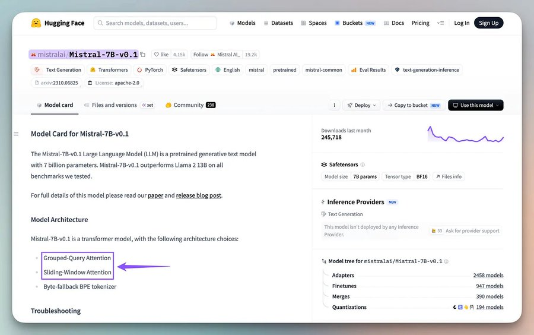
这份直给正是transformer强大、也昂贵之处:成本在显存：要存下'每个token看过什么'。
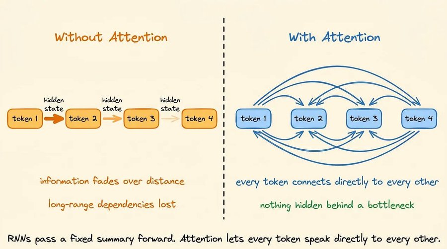
每层prefill都会为每个token算出key与value,存进KV cache,decode阶段直接查、不必重算。
缓存随生成不断变大:BF16的70B模型,单条128K上下文, KV cache约40GB,已接近4bit量化后的权重大小。整条注意力的演进,基本就是为这道显存墙找出口。
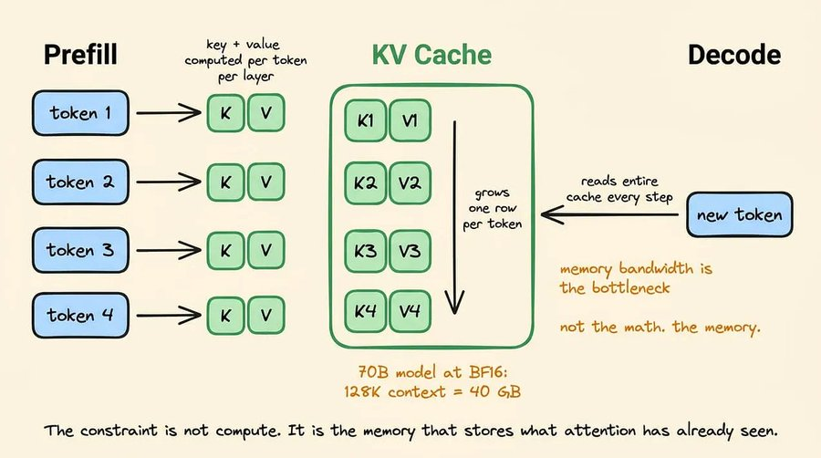
self-attention:同序列内任意两token做q·k点积取相关度。Causal给self加三角掩码,只允许看更早的token,是decoder-only能逐token生成的原因。
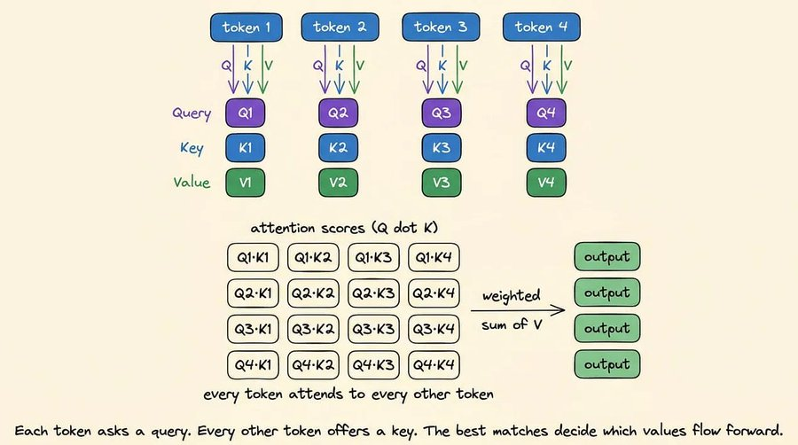
Cross-attention的q来自一段序列、k/v来自另一段,encoder-decoder的T5、Whisper靠它联系两段,decoder-only的Llama、GPT里没有。
2017版Multi-Head Attention让每个head各拿一套独立的q/k/v权重,为的是表达力:不同head可以同时盯不同关系,一个管句法、一个管语义、一个管长程指代。
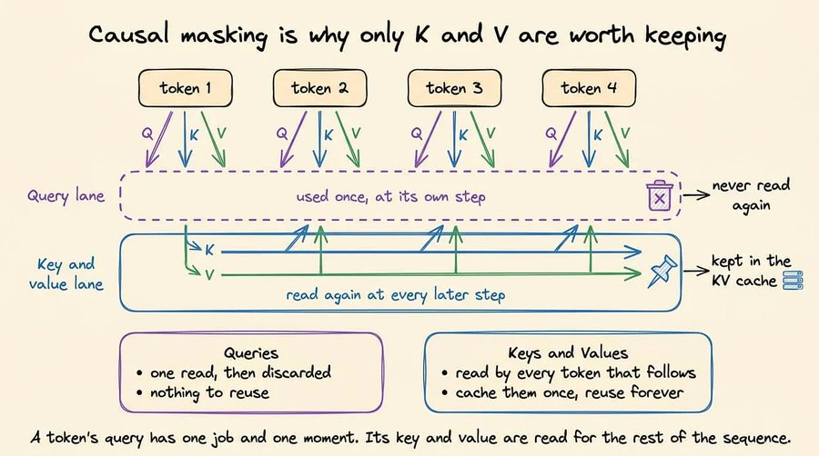
代价是每个head各持一份KV cache,多层累加后单请求就存许多份张量,把GPU显存占空。MHA之后的每个设计都在省钱这份内存。
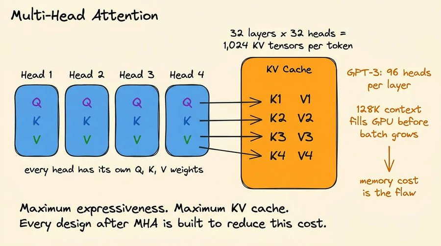
Multi-Query Attention让所有query head共用同一个key head与value head。KV cache因此缩小约一个head数因子:原本多份独立KV投影缩成一份。
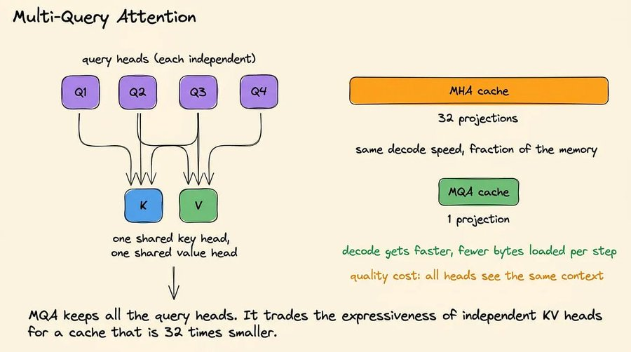
decode每步从HBM读的字节变少,而decode恰恰受显存带宽钳制,所以更快。代价是质量:共享后表达力下降。Falcon、PaLM、早期Gemini认这笔账换吞吐。
Grouped-Query Attention处两者之间:query head分成几组,每组独享一个key/value。32个query、8个KV组,就只存8套而非32套,约省4倍,同时拿回MQA交出的大部分质量。
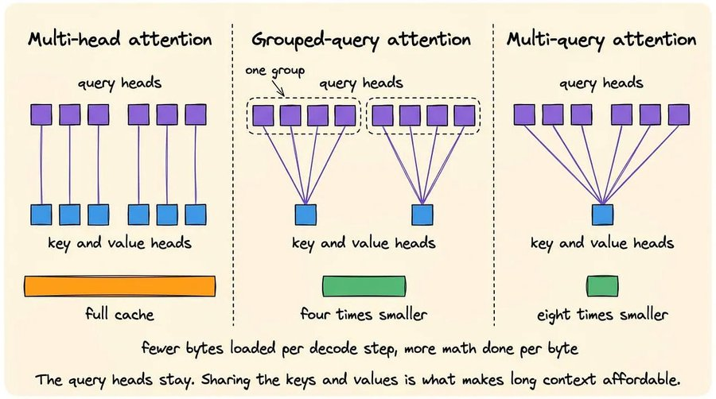
正因这个平衡,GQA成了近年绝大多数开源模型的默认:Llama 2的70B用8组,Llama 3、Mistral、Qwen、Gemma都是GQA。它减的是KV head的个数;下一个着力点是压缩head本身。
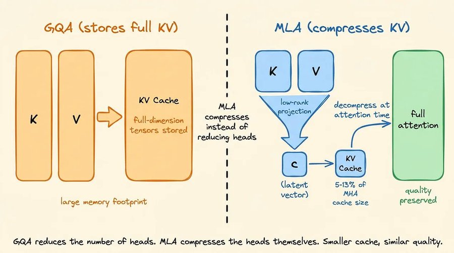
DeepSeek-V2带来的Multi-Head Latent Attention不再只砍head数,而是把全维度的k/v压进低秩latent再缓存,attention时解压回全维。存的是latent而非完整KV,，所以footprint比GQA还小,又没有MQA那种表达力损失。
代价是每次attention多付解压的算力,但推理里显存带宽通常远比算力稀缺,小cache便划算。DeepSeek-V2/V3/R1都用MLA,V2基准里它追平甚至超过MHA,而KV cache约仅MHA的5-13%。
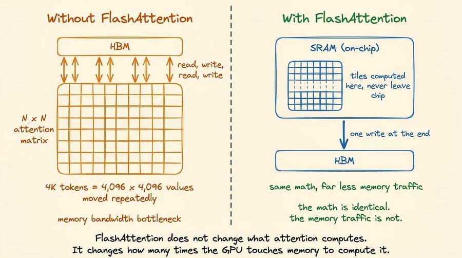
FlashAttention不改变attention算什么,改它怎么存取:传统做法把完整N×N注意力矩阵写进HBM、读回算softmax、再写再读去做加权,4K长度就是4096² 个值来回搬。
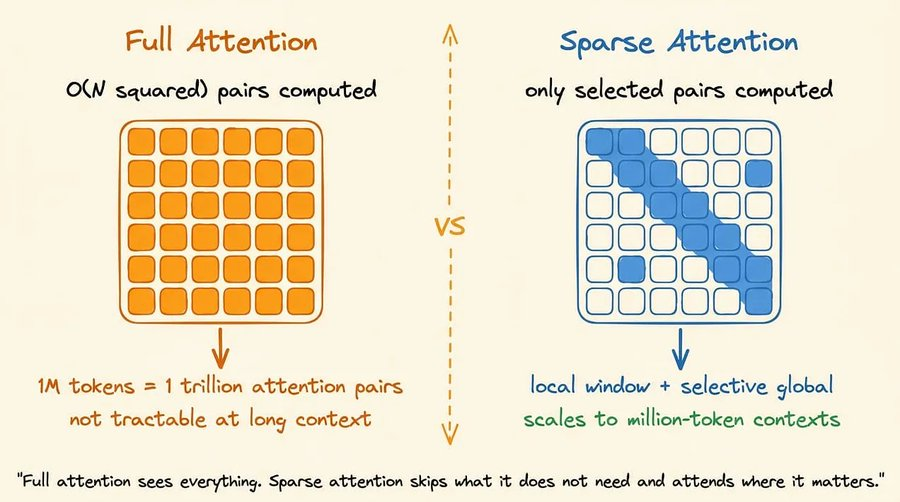
FlashAttention把矩阵切成塞得进片上SRAM的块、softmax增量算、不物化整矩阵、结果只落HBM一次。数学一样,内存流量不同,于是成了各serving引擎的默认内核。上面几个设计答'存什么与怎么压',它答'怎么高效地算'。
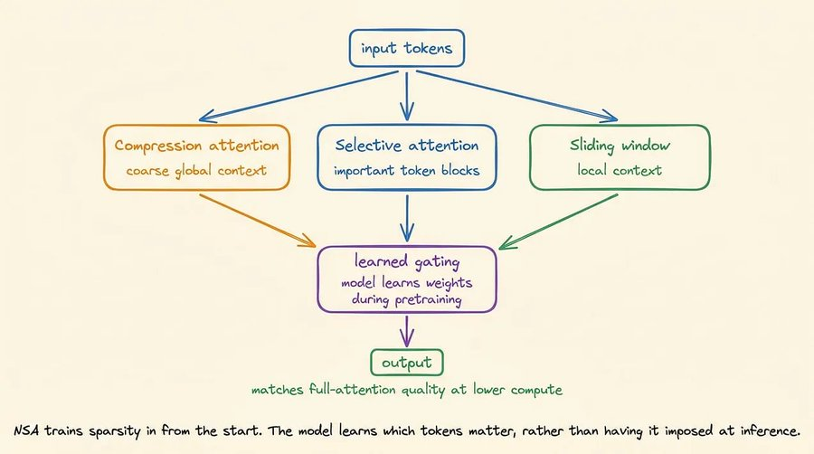
全attention是按序列长的平方。1M上下文矩阵有万亿条目,即便闪存再省也难遍历。稀疏attention跳过矩阵的大部分,只算选中的子集。SWA最简:每个token只看最近的W个;Mistral部分层用SWA、与全attention层交替。
NSA是DeepSeek 2025的另一个贡献,它在训练时就把稀疏学进去,每层并行走压缩的粗粒度、选择性细粒度与滑动窗口三路,让模型自己学哪些token要紧,长序列上既追平又更快。Qwen2.5-1M正是靠稀疏支撑百万上下文：到那个长度全attention会吃掉九成前向时间。把稀疏训进去,是目前对长上下文扩展最本质的答案。
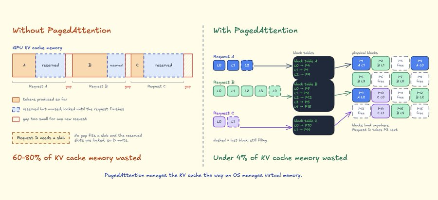
PagedAttention与RadixAttention不在权重里,而在serving引擎,是同一道显存压力靠分配与复用去化解。朴素办法给每个请求预留'最长可能序列'的连续显存,结果六到八成白白空置,还伴随碎片。PagedAttention当成操作系统管虚拟内存:按需分配定长块、块表把每请求的逻辑块映射到任意空闲物理块,碎片趋近于4% 以下：这是vLLM的做法。
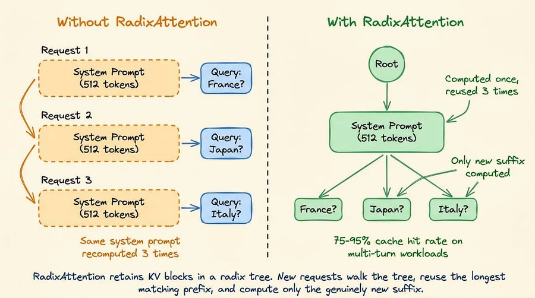
RadixAttention再进一步,把公共前缀的KV只算一次,按token序列存成一棵radix树,新请求沿树命中最长匹配前缀、只算新后缀;多轮负载下命中75-95%,一份长system prompt服务成千上万用户也只算一遍,按LRU淘汰：这是SGLang的做法。它们都不改模型用的attention类型,Llama 3的GQA在哪个引擎下照常跑。
所有设计都对着同一个瓶颈出招。MQA、GQA、MLA减的是每token存多少,分别有些质量代价;FlashAttention降的是访问的昂贵程度,数学原样;稀疏attention减的是要attend的token总数,是唯一能望向百万上下文的答案;Paged与Radix则在serving层削掉分配的浪费与重复,不碰模型。
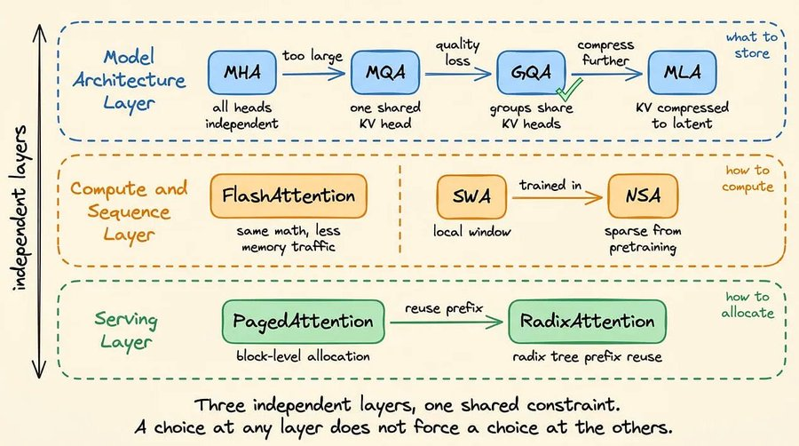
判断该用哪个,取决于你的部署里到底哪一环是紧约束。
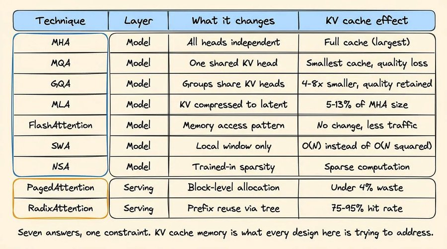
参考：https://x.com/akshay_pachaar/status/2096215921568498042